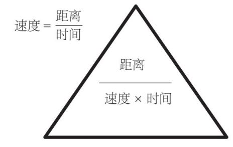

量纲分析被科学家、工程师和数学家用来检验他们的最新公式对于所用单位是否有意义。下面是正方形面积的计算公式：
正方形面积=边长×边长
我们知道，面积是以平方米为单位的。如果我们看方程式另一边的单位，即“边长×边长”的部分，就会发现这两个单位都是米；相乘时，米乘以米等于米的平方，方程式两边的单位互相匹配。分析公式的量纲虽不能保证公式的正确性，但可以作为一个有用的工具。
圆的面积计算公式是：
圆的面积=π×半径×半径
分析量纲后，我们发现该式与前面的示例完全相同。然而，我们需要把老朋友π找出来，才能得到正确的答案：
圆的面积=πr 2
对于π，它不会影响我们的量纲分析，因为它本身就不具有量纲。π是一个没有单位的常数，我们不会以米、千克或其他任何单位来衡量π。所以它是一个无量纲常数，多年来人们一直致力于研究这种量的价值。
18世纪后期，法国大革命中最大的成就之一就是引入了公制。由于十进制用起来非常方便，革命者也正好需要一个新的统一的度量衡，所以结果就顺理成章。这里还有另外一个原因，那就是自文艺复兴以来，自然哲学家（现代科学家和数学家的前身）一直频繁沟通，迫切地需要用一种更通用的方式来传递数量。
这个体系多年来不断完善，但其基本思想是基本单位越少越好，其他测量所需要的单位可以由这些基本单位导出。最初，基本单位包括米（长度）、千克（质量）和秒（时间）。法国革命者将从北极点经巴黎到达赤道的距离定义为一千万分之一米。千克最初是指1 000平方厘米的水在刚超过冰点温度时的质量。1899年，它被重新定义为“国际千克原器”（International Prototype Kilogram）的质量。这是一个精心制造的圆柱体，由极其耐磨耐腐蚀的铂铱合金制成。在之后的几年中，更多涉及基本物理常数的概念也因此得到了订正。秒是一种已使用很久的时间单位，这种将一小时分为60等份的计时法起源于古代文化中第一次测量时间所用的数字体系。现在，秒的定义与一种叫作铯的金属原子及其恒定的振动频率有关。确切地说，1秒是铯原子振动9 192 631 770次所需的时间。
随着我们对宇宙认识的提高和更多测量的需要，又增加了其他基本单位：开尔文（温度单位），安培（电流单位），摩尔（一定质量物质的量），坎德拉（发光强度单位）。这7个单位现在被称为国际单位制（SI）的7个基本单位，我们可以用上述基本单位来描述物理世界中的所有物质。
随着我们对世界理解的深入以及需要的增加，我们也使用了许多衍生或复合单位。例如，升是一种体积单位，等于千分之一立方米，但是在周一早上的上班路上，人们睡眼迷离时，一升汽油的概念要比千分之一立方米更清楚。许多衍生单位是以科学家的名字命名的，以表示他们的研究在那个领域的重要性。英国天才艾萨克·牛顿（1642—1726）以创立引力这个概念而闻名：
牛顿第二定律：力=质量×加速度
质量作为国际单位制中的基本单位，用千克度量。加速度的单位是米/秒2 。所以，力的单位是“千克·米/秒2 ”。我们可以把这个较长的复合单位称为牛顿。
布莱兹·帕斯卡（Blaise Pascal，1623—1662）是一位法国人，他除了在流体方面做了很多工作外，还发明了液压机和注射器。他的大部分研究都集中在压力上：
正如我们刚才看到的，力的单位为千克·米/秒2 ，面积的单位是平方米。因此，压力的单位应该是千克·米/（秒2 ·米2 ），化简后为“千克/（秒2 ·米）”。显然直接把压力的单位用帕斯卡表示，人们更容易接受。
以上两个定义都包含“每秒”的形式。当我们将某个量以时间单位划分时，我们观察的是该量在某个时间单位内的变化。这种现象在科学和数学中非常普遍，我们称之为变化的速率。最常见的就是速度的变化。你可能在学校中已经学过，我们可借助于下面这个三角形理解：

作为一名数学老师，我想说的是利用这个公式可以算出平均速度。例如，如果我乘火车从约克到伦敦，行驶距离是200英里 [1] ，耗时2小时，根据这个公式我的速度就是200÷2=100英里/小时。但这显然是一个平均速度，因为火车中途还会经历停车、加速、减速的过程，最后才到达伦敦。
速度是一种变化率。在本例中，它表示的是我每小时走了100英里的距离。我的位置相对于起点改变了100英里。加速度指的是速度的变化率，即在一定的时间内，速度变化了多少。物体下落时，受重力影响，会以9.81米/秒2 的加速度运动。这个加速度表示下降物体的速度每秒增加9.81米/秒。这个速度相当快，因此除了猫以外，几乎所有东西从足够高的地方摔下来，都会粉身碎骨。
月球上的加速度仅为1.66米/秒2 ，所以穿上比自身还重的宇航服的宇航员能够在月球表面轻松弹跳。
我们的一生都在体验9.81米/秒2 的加速度，我们总拿其他加速度与“重力”进行比较。在加速度的影响下，速度的大小和方向会发生变化，汽车在拐弯时，我们就会感受到这股力量。过山车产生的加速度可能高达地球引力的6倍，即6g。这么大的加速度，只在短时间内还可以承受。宇航员和战斗机飞行员经过训练，可以更长时间地承受较大的加速度，经常穿重力服可以将他们的血液从身体挤压到大脑中！
减速过程也可以有加速度，所以汽车中增加了碰撞缓冲区，它可以让速度的变化经历更长的时间，从而降低整体的加速度。安全气囊也可以有效地避免身体承受较高的加速度。
在公制系统发明几百年后，我们发现世界各地仍然在使用旧系统。在英国，人们还是喜欢用品脱 [2] 作为啤酒和牛奶的计量单位，用英里计量路程。在一些行业中，美国也使用和英国类似的度量系统，但不完全相同。
上述情况有时会引起诸多不便。1983年，加拿大航空公司的一架飞机在飞行途中燃油耗尽，机型是美国波音767，因为地面机组人员没有以千克计算装载的燃料，而是以磅 [3] 计。1千克比两磅还多，也就是说燃料还不到一半。再加上燃油表运转不灵，导致飞机不得不紧急降落在一个旧军用机场（现在是赛马场）。幸运的是，没有人受重伤，飞行员因没有准确检查燃油而被降级，但同时因为思维敏捷和技术过硬而获得嘉奖。
1999年，火星气候探测器从地球出发，预计9个月后进入环绕火星的轨道，以研究其气候变化。但在发动机将其送入轨道后不久，它就与地面失去了联系。随后的一项调查发现，一个分包商使用磅而不是由国际单位制衍生的牛顿来计算发动机产生的推力，导致了运算错误。
这是一个非常严重的错误，原因有几个。第一，量纲分析显示，磅和牛顿不是同一个量度：牛顿是力的量度，而磅是质量的量度。第二，发动机的异常表现事先已被标记，但是没有得到重视。
结果就是，探测器进入火星大气层的速度过快而分崩离析，未能完成任务。这个项目耗资超过600亿美元。
[1] 1英里≈ 1.61千米。——编者注
[2] 1品脱≈ 568毫升。——编者注
[3] 1磅≈ 0.45千克。——编者注